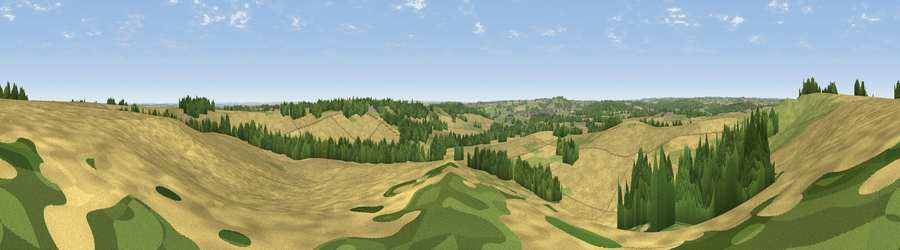

Viewpoint near Oxton
#23857 in England · top 28% of its area beats it · near OxtonThe view, rendered

A 360° render of this exact spot computed from the terrain model, tree cover and land cover — summer colours, afternoon light, calibrated against photographs of famous viewpoints. Real trees, hedges and buildings will differ in detail.
The panorama
Grey silhouette: terrain skyline in each direction (720 bearings, Earth curvature and refraction included). Dashed green: skyline with trees (+15 m) and buildings (+8 m) as obstacles. Blue strip: how far the ground is visible on each bearing.
Where the view opens
Wedge length = distance to the farthest visible ground on that bearing (vegetation-aware). Rings at 10, 25 and 50 km.
What fills the view
65% cropland · 19% grassland · 15% woodland ·
Angular shares of the visible panorama (visual magnitude), not map area. Landscape diversity 0.40 (0–1 Shannon).
Key numbers
More beautiful places nearby
The staircase of upgrades: each row has a higher view potential than everything closer. Driving times are estimates from straight-line distance, calibrated against real road routing — check an actual route before setting out.
| Place | Direction | Drive | Score |
|---|---|---|---|
| Loath Hill | NNW · 1 km | ~3 min | 53.4 |
| Viewpoint near Farnsfield | NE · 1 km | ~4 min | 59.2 |
| Viewpoint near Arnold | SW · 7 km | ~15 min | 64.1 |
| Burstheart Hill [Thoresby Colliery] | N · 15 km | ~27 min | 69.3 |
| Viewpoint near Belvoir | SE · 26 km | ~42 min | 70.8 |
| Crich Stand | W · 29 km | ~46 min | 73.0 |
| Alport Height | W · 33 km | ~51 min | 73.9 |
| Viewpoint near Woodhouse Eaves | SSW · 40 km | ~60 min | 77.7 |
53.07020, -1.04813 · source: screening · position refined by local search. Computed location — check access rights before visiting.